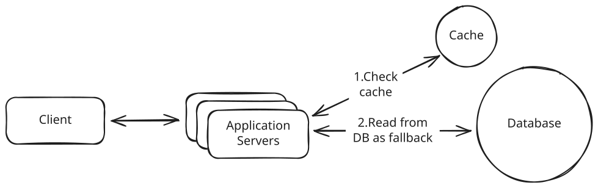
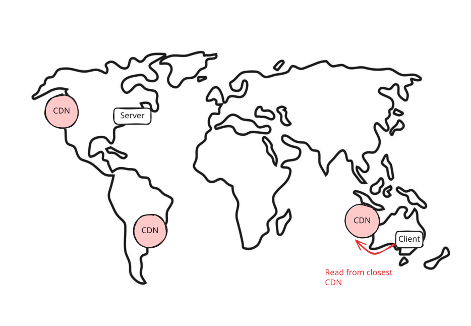
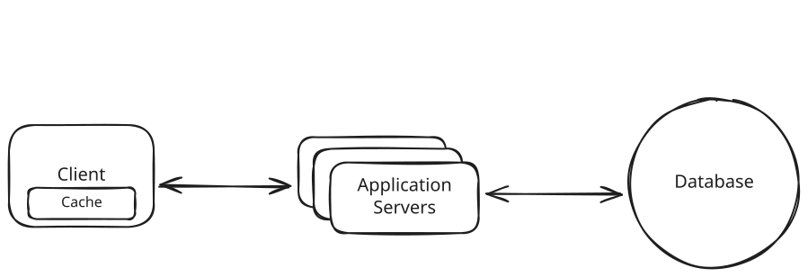
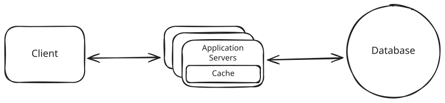
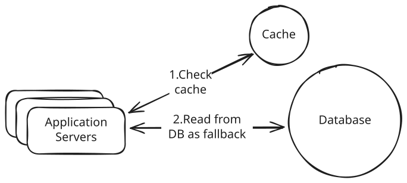
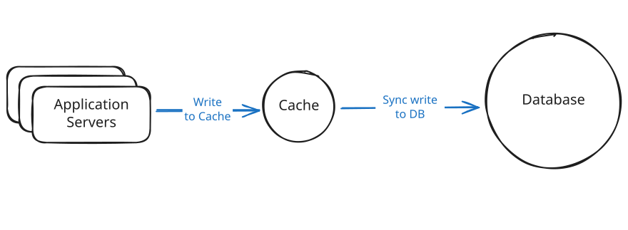
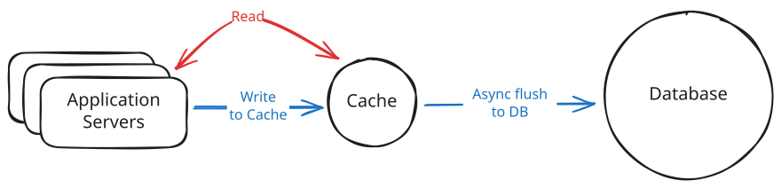
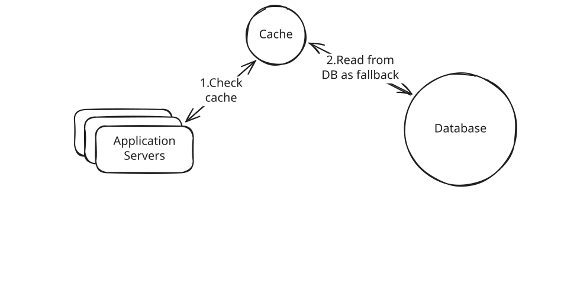
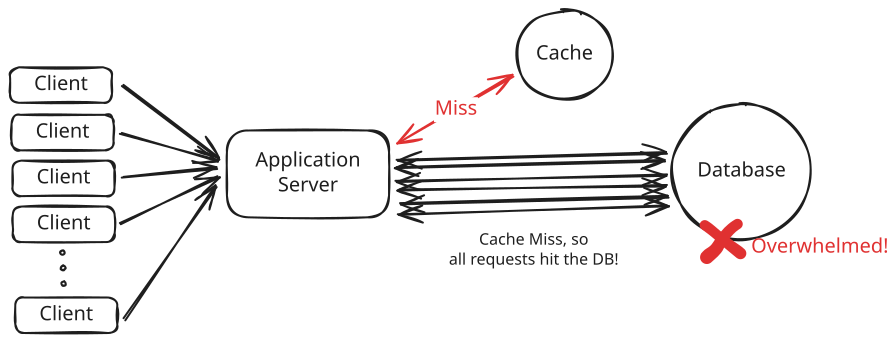

Core Concepts
Caching
Learn about caching and when to use it in system design interviews.
In system design interviews, caching comes up almost every time you need to handle high read traffic. Your database becomes the bottleneck, latency starts creeping up, and the interviewer is waiting for you to say the word: cache.
Reading a user profile from Postgres may take 50 milliseconds, but reading from an in-memory cache like Redis takes just 1 millisecond. That's a 50x improvement in latency. Databases store data on disk, and every query pays the cost of disk access. Memory sits much closer to the CPU and avoids that entirely.
Caches are essential for scalable systems. They reduce load on the database and cut latency dramatically. But they also create new challenges around invalidation and failure handling.
This breakdown covers the basics of caching, when and where to use it, common pitfalls, and how to talk about caching clearly in interviews.
Where to Cache
When most engineers hear caching, they immediately think of Redis or Memcached sitting between the application and the database. It is the most common type of cache and the one interviewers care about the most.
But caching shows up in multiple layers of a system. Browsers cache. CDNs cache. Applications cache. Even databases have built-in caching layers.
Let's look at the main places you can cache data, why each one exists, and when it makes sense to use it.
External Caching
An external cache is a standalone cache service that your application talks to over the network. This is what most people think of when they hear caching. You store frequently accessed data in something like Redis or Memcached so you do not have to hit the database every time.

External Caching
External caches scale well because every application server can share the same cache. They also support eviction policies like LRU and expiration via TTL so your memory footprint stays controlled.
In system design interviews, external caching with Redis is the default answer when discussing caching strategies. Interviewers expect you to mention it for any high-traffic system. Start here, then layer on other caching types such as CDN or client-side caching only if the problem calls for them.
CDN (Content Delivery Network)
A CDN is a geographically distributed network of servers that caches content close to users. Instead of every request traveling to your origin server, a CDN stores copies of your content at edge servers around the world.
Modern CDNs like Cloudflare, Fastly, and Akamai can cache much more than static files. They can also cache public API responses, HTML pages, and even run edge logic to personalize content or enforce security rules before requests reach your servers. But the most common and most impactful use of a CDN is still media delivery.
How it works:
- A user requests an image from your app.
- The request goes to the nearest CDN edge server.
- If the image is cached there, it is returned immediately.
- If not, the CDN fetches it from your origin server, stores it, and returns it.
- Future users in that region get the image instantly from the CDN.

CDN Caching
Without a CDN, every image request travels to your origin. If your server is in Virginia and the user is in India, that adds 250–300 ms of latency per request. With a CDN, the same image is served from a nearby edge server in 20–40 ms. That is a massive performance difference.
Even though modern CDNs can cache API responses and dynamic content, in system design interviews the safest time to introduce a CDN is when your system serves static media at scale. Start with that reason first, then expand only if the problem calls for more.
Client-Side Caching
Client-side caching stores data close to the requester to avoid unnecessary network calls. This usually means the user's device, like a browser (HTTP cache, localStorage) or mobile app using local memory or on-device storage.
But it can also mean caching within a client library. For example, Redis clients cache cluster metadata like which nodes are in the cluster and which slots are assigned to them. That way, the client can route requests directly to the right node without querying the cluster on every operation.
For user-facing caching, you have limited control from the backend. Data can go stale and invalidation is harder. The Strava app keeps your run data on the device while you are offline and syncs it later. A browser reusing a previously downloaded image from disk is also caching.

Client-Side Caching
In-Process Caching
Most candidates, and engineers, overlook the fact that servers run on machines with a lot of memory. As hardware improves, this becomes increasingly true. You can use that memory to cache data directly inside the application process instead of always calling out to Redis or the database.
The idea is simple: if your service keeps requesting the same small pieces of data again and again, store them in a local cache inside the process. Reads from local memory are even faster than reads from Redis because they avoid any network call.
This light-weight form of caching makes sense for small pieces of data that are requested frequently like:
- Configuration values
- Feature flags
- Small reference datasets
- Hot keys
- Rate limiting counters
- Precomputed values

In-Process Caching
In-process caching is blazing fast, but it comes with obvious limitations. Each instance of your application has its own cache, so cached data is not shared across servers. If one instance updates or invalidates a cached value, the others will not know.
Use in-process caching for small, frequently accessed values that rarely change. It is great for speed but not a replacement for Redis. In system design interviews, mention this only as an optimization layer after you have already introduced an external cache.
Cache Architectures
Not all caching works the same way. How you read from and write to the cache changes performance, consistency, and complexity. These are the four core cache patterns you should know for system design interviews.
Cache-Aside (Lazy Loading)
This is the most common caching pattern and the one you should default to in interviews.
How it works:
- Application checks the cache.
- If the data is there, return it.
- If not, fetch from the database, store it in the cache, and return it.

Cache-Aside
Cache-aside only caches data when needed, which keeps the cache lean. The downside is that a cache miss causes extra latency.
If you only remember one caching pattern for interviews, make it cache-aside.
Write-Through Caching
With write-through caching, the application writes only to the cache. The cache then synchronously writes to the database before returning to the application. The write operation does not complete until both the cache and database are updated.
In practice, this requires a cache implementation that supports write-through, like a caching library with a data store plugin. When you write to the cache, the library handles calling your database write logic before acknowledging the write. Redis itself does not natively support write-through, so you need application code or a framework to implement this pattern.

Write-Through
The tradeoff is slower writes because the application must wait for both the cache update and the database write to complete. Write-through can also pollute the cache with data that may never be read again.
Write-through still suffers from the dual-write problem. If the cache update succeeds but the database write fails, or vice versa, the systems can end up inconsistent. You need retry logic, error handling, or eventually accept that perfect consistency is difficult without distributed transactions.
In system design interviews, write-through is less common than cache-aside because it requires specialized caching infrastructure and still has consistency edge cases.
Use this when reads must always return fresh data and your system can tolerate slightly slower writes.
Write-Behind (Write-Back) Caching
With write-behind caching, the application writes only to the cache. The cache batches and writes the data to the database asynchronously in the background.

Write-Behind
This makes writes very fast, but introduces risk. If the cache crashes before flushing, you can lose data. This is best for workloads where occasional data loss is acceptable.
Use this when you need high write throughput and eventual consistency is acceptable. Common in analytics and metrics pipelines.
Read-Through Caching
With read-through caching, the cache acts as a smart proxy. Your application never talks to the database directly. On a cache miss, the cache itself fetches from the database, stores the data, and returns it.
This is the read equivalent of write-through. In both patterns, the cache acts as an intermediary that handles database operations. Read-through manages reads, write-through manages writes. Systems often combine both patterns.

Read-Through
This centralizes caching logic but adds complexity and usually requires a specialized caching library or service. It is less common in practice than cache-aside.
CDNs are a form of read-through cache. When a CDN gets a cache miss, it fetches from your origin server, caches the result, and returns it. But for application-level caching with Redis, cache-aside is far more common.
Generally speaking, there are very few reasons to propose this pattern in system design interviews unless you're discussing CDNs or similar infrastructure.
Cache Eviction Policies
Caches have limited memory, so they need a strategy for deciding which entries to remove when full. These strategies are called eviction policies.
LRU (Least Recently Used)
LRU evicts the item that has not been accessed for the longest time. It tracks access order using a linked list or ring buffer so the least recently used item can be removed in constant time.
It is the default in many systems because it adapts well to most workloads where recently used data is likely to be used again.
LFU (Least Frequently Used)
LFU evicts the item that has been accessed the least. It maintains a counter for each key and removes the one with the lowest frequency. Some implementations use approximate LFU to avoid the cost of precise frequency tracking.
This works well when certain keys are consistently popular over time, like trending videos or top playlists.
FIFO (First In First Out)
FIFO evicts the oldest item in the cache based only on insertion time. It can be implemented with a simple queue, but it ignores usage patterns.
Because it may evict items that are still hot, it is rarely used in real systems beyond simple caching layers.
TTL (Time To Live)
TTL is not an eviction policy by itself. Instead, it sets an expiration time for each key and removes entries that are too old. It is often combined with LRU or LFU to balance freshness and memory usage.
TTL is a must have when data must eventually refresh, like API responses or session tokens.
Common Caching Problems
Caching makes systems faster, but it also introduces new failure modes. These problems show up in real systems at scale, and interviewers often use them to test whether you understand the trade-offs of caching, not just the benefits. If you bring up caching in an interview, you should also show that you can handle these edge cases.
Cache Stampede (Thundering Herd)
A cache stampede happens when a popular cache entry expires and many requests try to rebuild it at the same time. There is a brief window, even if only a second, where every request misses the cache and goes straight to the database. Instead of one query, you suddenly have hundreds or thousands, which can overload the database.

Cache Stampede
For example, imagine your system caches the homepage feed with a TTL of 60 seconds. When the cache expires at exactly 12:01:00, every request at that moment misses the cache and queries the database. If traffic is high, this spike can overwhelm the database and cause cascading failures.
How to handle it:
- Request coalescing (single flight): Allow only one request to rebuild the cache while others wait for the result. This is the most effective solution.
- Cache warming: Refresh popular keys proactively before they expire. This only helps when using TTL-based expiration. If you invalidate cache on writes instead, warming does not prevent stampedes.
Cache Consistency
Cache consistency problems are some of the most commonly discussed in system design interviews. They happen when the cache and database return different values for the same data. This is common because most systems read from the cache but write to the database first. That creates a window where the cache still holds stale data.
For example, if a user updates their profile picture, the new value is written to the database but the old value might still be in the cache. Other users may see the outdated profile picture until the cache eventually refreshes.
There is no perfect solution. You choose a strategy based on how fresh the data must be.
How to handle it:
- Cache invalidation on writes: Delete the cache entry after updating the database so it gets repopulated with fresh data.
- Short TTLs for stale tolerance: Let slightly stale data live temporarily if eventual consistency is acceptable.
- Accept eventual consistency: For feeds, metrics, and analytics, a short delay is usually fine.
Hot Keys
A hot key is a cache entry that receives a huge amount of traffic compared to everything else. Even if the cache hit rate is high, a single hot key can overload one cache node or one Redis shard and become a bottleneck.
For example, if you are building Twitter and everyone is viewing Taylor Swift’s profile, the cache key for her user data (user:taylorswift) may receive millions of requests per second. That one key can overload a single Redis node even though everything is working “correctly.”
How to handle it:
- Replicate hot keys: Store the same value on multiple cache nodes and load balance reads across them.
- Add a local fallback cache: Keep extremely hot values in-process to avoid pounding Redis.
- Apply rate limiting: Slow down abusive traffic patterns on specific keys.
Pattern: Scaling Reads
Hot key scenarios in distributed caches is not limited to just caches. It is a common problem in distributed systems when millions of users simultaneously request the same viral content, traditional caching assumptions break down.
Caching in System Design Interviews
Caching comes up in nearly every system design interview, so it's important to know when to bring it up and how to walk through it systematically.
When to Bring Up Caching
Don't jump straight to caching. You need to establish why it's necessary first.
Bring up caching when you identify one of these problems:
Read-heavy workload: "We're serving 10M daily active users, each making 20 requests per day. That's 200M reads hitting the database. Even with indexes, we're looking at 20-50ms per query. A cache drops that to under 2ms and takes most of the load off the database."
Expensive queries: "Computing a user's personalized feed requires joining posts, followers, and likes across multiple tables. That query takes 200ms. We can cache the computed feed for 60 seconds and serve it in 1ms from Redis."
High database CPU: "Our database CPU is hitting 80% during peak hours just serving reads. The same queries run over and over. Caching the hot queries will cut database load by 70-80%."
Latency requirements: "We need sub-10ms response times for the API. Database queries are taking 30-50ms. We have to cache."
The pattern is simple. Identify the performance problem, quantify it with rough numbers, and explain how caching solves it. You can use our Numbers to Know to get a sense of reasonable database and cache latencies.
How to Introduce Caching
Once you've established the need for caching, walk through your caching strategy systematically:
1. Identify the bottleneck
Start by pointing to the specific problem caching will solve. Is it database load? Query latency? Expensive computations? Be specific about what's slow and why.
"User profile queries are hitting the database 500 times per second during peak hours. Each query takes 30ms. That's our bottleneck."
2. Decide what to cache
Not everything should be cached. Focus on data that is read frequently, doesn't change often, and is expensive to fetch or compute.
"We'll cache user profiles since they're read on every page load but only updated when users edit their settings. We'll also cache the trending posts feed since it's computed from expensive aggregations but only needs to refresh every minute."
Think about cache keys. How will you look up cached data? For user profiles, the key might be user:123:profile. For trending posts, it could be trending:posts:global.
3. Choose your cache architecture
Pick a caching pattern that matches your consistency requirements. Write-through makes sense when you need strong consistency. Write-behind works for high-volume writes where you can tolerate some risk.
"I'll use cache-aside. On a read, we check Redis first. If it's there, return it. If not, query the database, store the result in Redis, and return it."
If you're dealing with static content like images or videos, mention CDN caching. If you have extremely hot keys that get hammered, mention in-process caching as an optimization layer.
4. Set an eviction policy
Explain how you'll manage cache size. LRU is the safe default answer. TTL is essential for preventing stale data.
"We'll use LRU eviction with Redis and set a TTL of 10 minutes on user profiles. That keeps the cache from growing unbounded while ensuring profiles don't get too stale. If a user updates their profile, we'll invalidate the cache entry immediately."
5. Address the downsides
Caching introduces complexity. Show you've thought about the trade-offs.
Cache invalidation: How do you keep cached data fresh? Do you invalidate on writes, rely on TTL, or accept eventual consistency?
"When a user updates their profile, we'll delete the cache entry so the next read fetches fresh data from the database."
Cache failures: What happens if Redis goes down? Will your database get crushed by the sudden traffic spike?
"If Redis is unavailable, requests will fall back to the database. We'll add circuit breakers so we don't overwhelm the database with a stampede. We might also consider keeping a small in-process cache as a last-resort layer."
Thundering herd: What happens when a popular cache entry expires and 1000 requests try to refetch it simultaneously?
"For extremely popular keys, we can use probabilistic early expiration or request coalescing so only one request fetches from the database while others wait for that result."
Don't list every possible problem. Pick one or two that are relevant to the system you're designing and explain how you'd handle them. For staff-level candidates, focus on the important but non-obvious scenarios rather than burning time on things the interviewer can already assume.
Conclusion
Caching is what you do when reading from the database is too slow or too expensive. It keeps frequently accessed data in fast memory so you can skip the database entirely for most reads.
The core trade-off is simple. Caches make reads faster and reduce load on whatever is behind them, but they introduce complexity around staleness and invalidation. Cached data can fall out of sync with the database. Cache failures can crush your database if you're not prepared. Hot keys can create bottlenecks even in distributed caches.
In interviews, bring up caching after you've identified a database bottleneck. Walk through what you'll cache, which caching pattern you'll use, how you'll handle eviction, and what happens when things go wrong. CDN caching works for static media, and in-process caching can make sense for extremely hot keys.
Most importantly, don't cache everything. Show you understand when caching is worth the complexity and when a well-indexed database is enough.
Test Your Knowledge
Answer the question below to find your gaps.
Question 1 of 15
In system design interviews, which caching pattern should you default to when discussing application-level caching?
1
Read-through caching with auto-population
2
Cache-aside (lazy loading)
3
Write-behind caching
4
Write-through caching